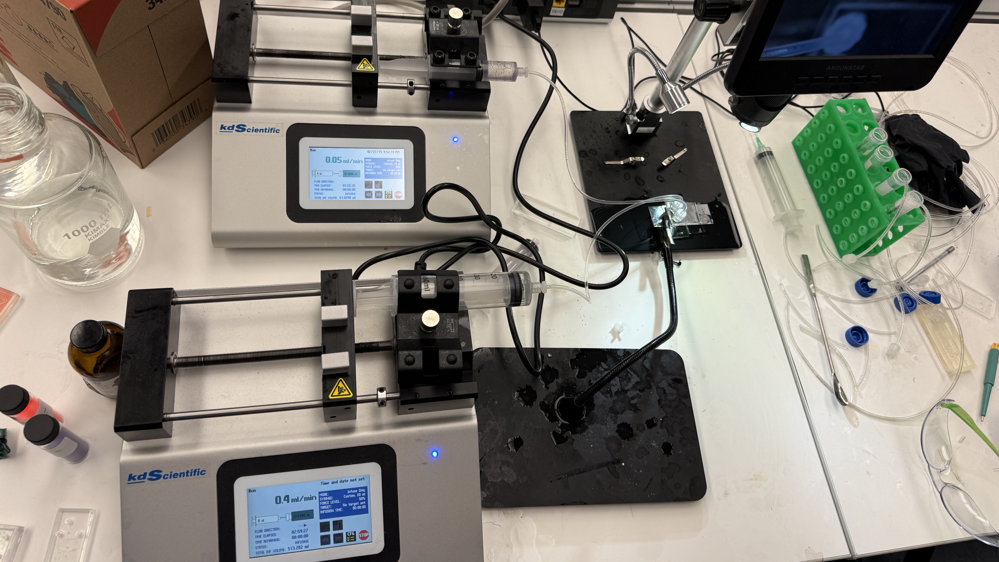

Pinch Flow Fractionation Microfluidic Device
This project focuses on the design and fabrication of a Pinch Flow Fractionation (PFF) microfluidic device, which sorts particles based on size using carefully controlled fluid flow patterns. The device leverages sheath flow to focus particles and uses pinch geometries to split particles into different outlets based on size.
